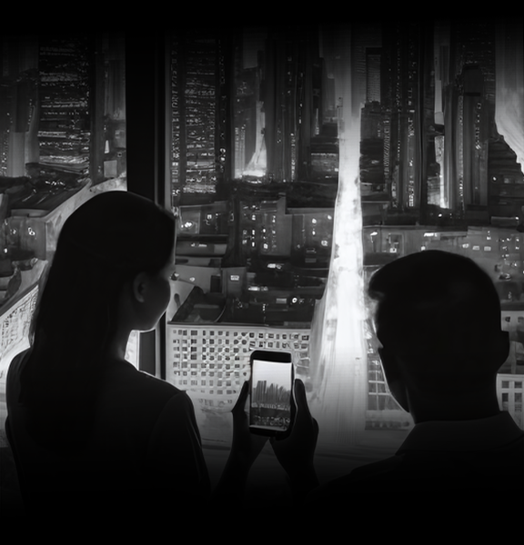

Photos to the masses
The advent of smartphones has democratized photography, placing powerful imaging tools in the hands of billions worldwide. With just a tap, anyone can capture and share moments instantly, blurring the lines between amateur and professional photography. This accessibility has reshaped photography culture, fueling a proliferation of visual storytelling and personal expression. Social media platforms serve as virtual galleries, where images transcend geographic boundaries to spark conversations and connections